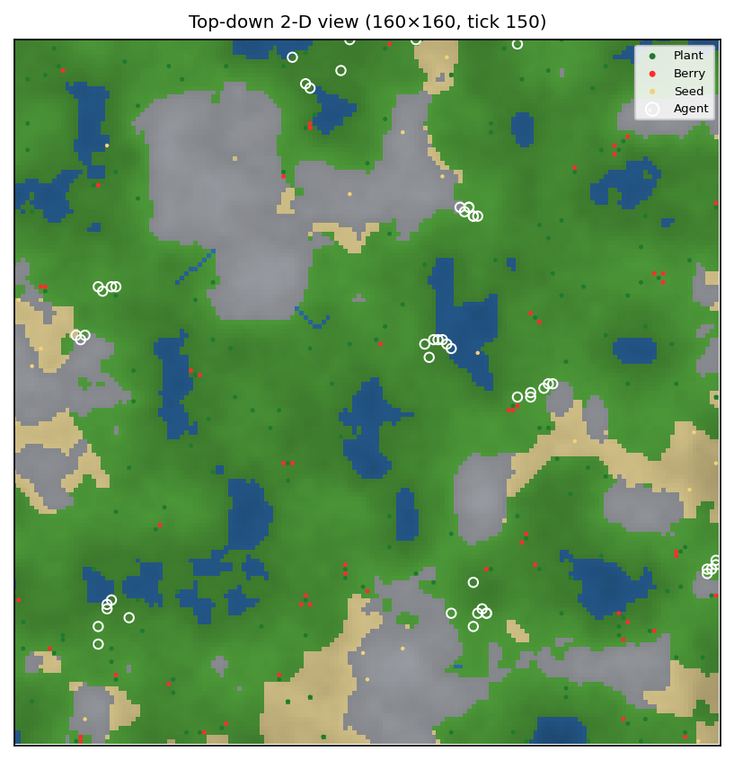
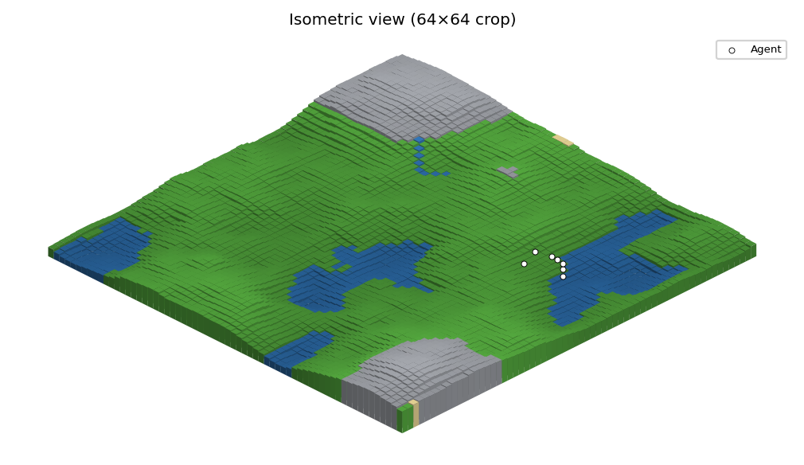
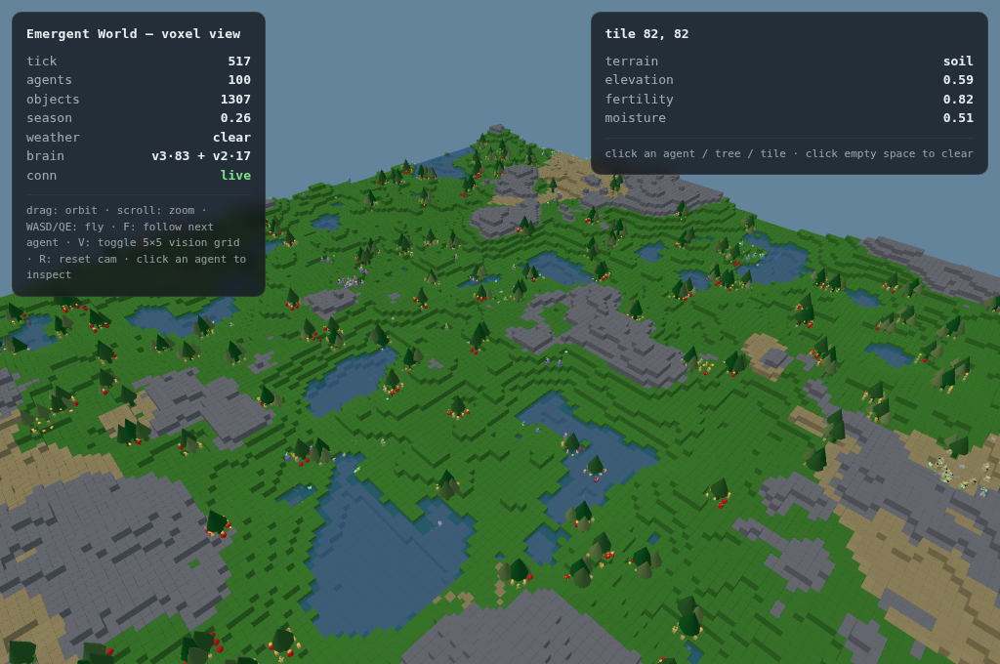
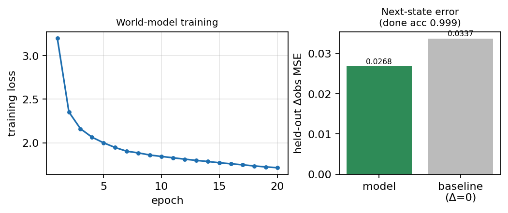
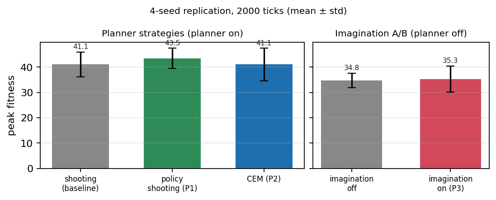
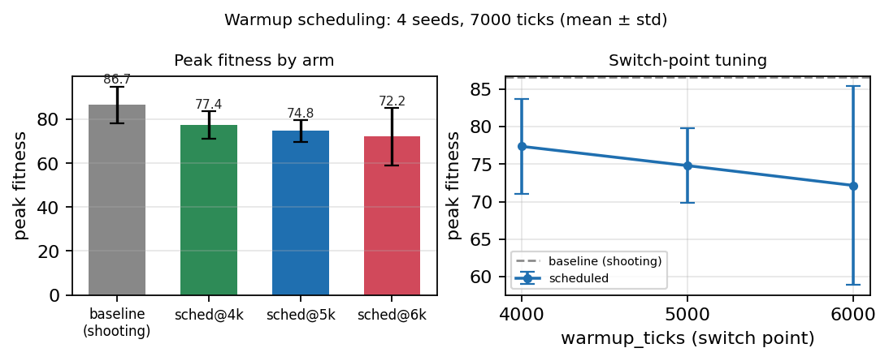
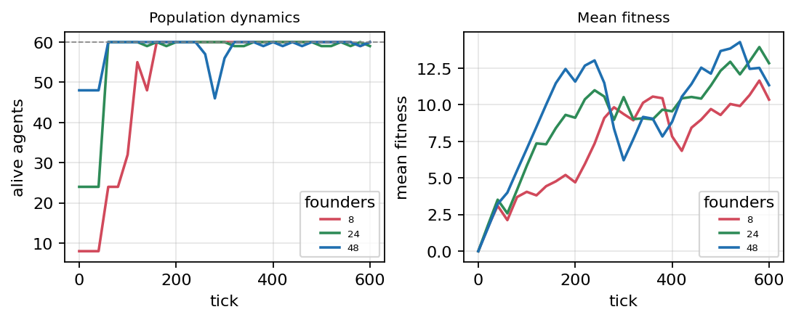

Reinforcement-learning agents are usually trained one policy at a time against a fixed task, with a learned "world model" either absent or assumed helpful. This work instead studies populations of agents that live, learn during their lifetime, and reproduce with inheritance of learned weights (a Lamarckian scheme), so selection and individual learning act together and behaviour is observed rather than rewarded into existence. Into this sandbox we introduce a per-agent latent world model and ask, with matched A/B runs and multi-seed replication, what it is actually good for. The contributions:
World models and latent imagination. Ha and Schmidhuber [1] train agents inside a learned generative model; PlaNet [3] and the Dreamer line [2,4] learn latent dynamics and optimise behaviour on imagined rollouts. Our offline population model is the [1]-style predictor; the per-agent latent head is the Dreamer-style component the planner, curiosity, and imagination losses consume.
Decision-time planning. Random shooting and PETS [5] act on the best of many sampled model rollouts; MPPI [6] reweights trajectories; MuZero [7] runs policy/value-guided search; MBPO [8] uses short model rollouts as training data. Our controllers are the simplest instances of shooting, policy-guided shooting, and categorical CEM.
Policy learning and curiosity. Lifetime learning is PPO [9] with GAE(λ) [10] (a legacy A2C/A3C [11] learner exists); intrinsic reward is forward-model prediction error, the ICM signal [12] (related: RND [13]). Perception, memory, evolution: attention [14], GRU [15], fission-with- mutation neuroevolution [16], novelty metrics [17].
Model error. The failure mode we measure — a planner exploiting the compounding open-loop error of a model trained one step at a time — is the objective-mismatch problem [19]; our multi-step consistency loss follows the data-as-demonstrator insight of training on the model's own predictions [18].
Each world is procedurally generated (Fig. 1): layered value noise → an elevation field; downhill tracing from high-elevation sources carves rivers; biomes (soil/sand/water/rock) derive from elevation plus a moisture field with fertile corridors along rivers; an ecology pass seeds plants that grow through seed→sprout→mature stages, fruit into berries, and drop seeds that germinate under a neighbourhood carrying-capacity cap (≤3 plants within radius 2). The default experimental arena is 64×64 with soil/rock/water/sand ratios 0.62/0.18/0.12/0.08.
Per tick: a day/night cycle (length 200) modulates light;
seasons (length 2,000) modulate temperature; weather switches between rain
(recovering soil moisture) and drought (evaporation ×2); optional wildfire
ignites, spreads against a moisture threshold, and returns nutrients; soil
fertility/moisture relax slowly toward equilibrium; plants consume fertility and
moisture as they grow. Agents pay a metabolism cost scaled by temperature, eat
berries (+20 energy), can plant seeds (−5 energy), and die at zero energy
or max_age 1,000, returning 15% of consumed fertility to the soil.
Water is impassable. Reproduction is energetic: above 45% of max energy and age
≥ 50, an agent splits 40% of its energy into an offspring whose genome
is the parent's trained weights plus Gaussian mutation (σ=0.02), capped at
30 alive agents in the experimental arena.
The same live world is observable three ways (Fig. 3), all fed by one read-only state bridge that never affects dynamics: a top-down 2-D biome/elevation map, an isometric 2.5-D render, and an interactive in-browser voxel client streamed over server-sent events (terrain columns, trees that scale with plant maturity, berries, seeds, agents with follow-markers and vision-grid overlays, weather, and a live HUD reporting the population's brain mix). Every study below was spot-checked visually in at least one viewer.



Agents act once per tick on an egocentric, facing-rotated 5×5 vision grid plus internal state, stimulus features, inventory, and (v3.5) social/climate features. Three architectures share one genome/IO contract (Table 1); the genome layout is append-only, so a saved population trained under one version migrates forward and can compete in a shared world.
| Brain | Obs | Actions | Params | Core |
|---|---|---|---|---|
| v2 (legacy) | 72 | 8 | ≈8.9k | dense encoder → GRU → policy/value |
| v3 (attention) | 72 | 8 | ≈17.3k | tokenised vision + attention → GRU → [z,h] value |
| v3.5 (social) | 78 | 9 | ≈21.1k | v3 + 6 social/climate inputs + SIGNAL + pheromones |
Figure 2 shows the data flow. Each of the 25 vision tiles is embedded by one shared matrix (position codes appended — position-equivariant perception at constant parameter count); a single attention query derived from the agent's internal state pools the tiles [14]; the latent z=[state | pooled-vision] feeds a GRU [15] memory h; the policy head reads h, the value head the joint [z,h].
PPO [9] on stored sequences (seq_len 8, GAE λ=0.95, clip 0.2, entropy 0.01, lr 3×10−4, 1 epoch per update) with full-network backprop: gradients flow through the policy and value heads, the GRU through time, and the attention encoder. A global scheduler staggers updates across ticks. Trained weights are written back into the genome (Lamarckian), so offspring inherit learned behaviour [16]. Newborns get fading instinct biases (eat-when-hungry, approach-food) that decay to zero by age 150.
When enabled, the genome grows a dynamics head g(h,a)→(ẑ′,r̂) — a one-hidden-layer MLP (width 32) from the GRU hidden state and a one-hot action to a predicted next latent and reward, trained as an auxiliary loss in the same PPO update (targets stop-gradient). It powers planning (Sec. 5), curiosity (ICM-style z-scored prediction error [12]), and imagination (Sec. 5.4).
Separately, a population-level model f(o,a)→(Δo,r̂,pdone) (two tanh layers, 128 hidden) trains offline by regression on logged transitions from full runs [1], giving a measurable reference for what these small models can learn (Sec. 6.2).
The planner is receding-horizon model-predictive control in latent space: from the current hidden state h, imagine S candidate action sequences of depth D through the dynamics head, score each by ∑kγkr̂k+γDV, execute the best first action, and (by default) replan next tick. All variants are config-gated and off by default; the defaults reproduce the legacy controller exactly. Experiments use depth 2, 6 samples.
5.1 Shooting (baseline). First actions uniform over the valid-action mask; continuations uniform-random [5].
5.2 P1 — policy-guided rollouts. Continuations sampled from the agent's own policy at the imagined latent state (Dreamer-style [2]): in-distribution, lower-variance rollouts. Optional first-action biasing, reward/value z-scoring, and plan commitment are implemented; P1 experiments use uniform first actions, no normalisation, commit 1.
5.3 P2 — cross-entropy method. A categorical distribution per step, refined over 3 iterations: sample the population, keep the top-30% elites, refit smoothed action frequencies [5,6]. TD(λ) scoring implemented (λ=1 used below).
5.4 P3 — imagination actor-critic. Dreamer-style [2]: from detached real hidden states the actor rolls 5 steps in the dynamics head; TD(λ) returns from the critic score the trajectory; REINFORCE with a value baseline trains the actor, regression the critic. Planning is distilled into the policy instead of paid per tick.
5.5 Warmup scheduling. At tick 0 the model is untrained, so
model-heavy planning "shoots off" a garbage model. The planner can run a cheap
exploratory strategy (P1) until warmup_ticks, then switch to the
configured strategy; imagination is gated the same way.
5.6 Model-quality toolkit (this work). Three mechanisms motivated by
Sec. 6.5–6.6: (i) a k-step rollout-error diagnostic — every
learner update, roll the dynamics head open-loop for k steps from real
hidden states (its own predictions fed back through the GRU, real logged
actions) and measure latent MSE against the real encoded latents at each
horizon: exactly the compounding-error regime the planner uses, measured
on-line per agent at negligible cost and logged per generation;
(ii) readiness gating — the planner switches to its main strategy when
the measured error EMA drops below a threshold (latched;
warmup_ticks becomes a switch-anyway deadline) instead of on a
blind tick count; (iii) a multi-step consistency loss — the standard
auxiliary loss trains one-step prediction only, leaving compounding error
unconstrained [18,19]; this loss rolls the head open-loop for k steps on stored
sequences and penalises latent/reward error at horizons 2..k.
Throughout: peak fitness is the highest per-generation mean agent fitness in a run; final is the last generation's mean; tiles is unique tiles visited per agent; EAT counts successful eats; seeds counts seeds planted; ticks/s is single-core throughput including learning. All planning runs: 64×64 world, v3.5+PPO, world-model head on, curiosity off, cap 30, generation length 1,000. Fitness is the simulation's internal proxy; comparisons are within-simulation.
One 160×160 world, 8 founders (1 v2, 7 v3), offspring breed true, 4,000 ticks, cap 100. The attention brain displaces the legacy brain — final population {v3:96, v2:4} (Table 2). Both cohorts reach 100% eating success, so the edge is foraging efficiency and reproduction, not basic feeding.
| Cohort | Agents | Mean age | Max age | Mean fitness | Eat succ. |
|---|---|---|---|---|---|
| v2 (legacy) | 255 | 98.3 | 259 | 8.95 | 100% |
| v3 (attention) | 1715 | 101.3 | 493 | 10.57 | 100% |
291,300 transitions logged from a v3.5+PPO run (64×64, pop 30; all nine actions exercised, SIGNAL 67,027 times). Training: 20 epochs, loss 3.20→1.71 (Fig. 4). Held-out accuracy in Table 3. The model is real but modest — 20% better than "nothing changes" — a number to keep in mind for everything that follows.

| Metric | Model | Baseline / scale | Reading |
|---|---|---|---|
| Δo MSE | 0.0268 | 0.0337 (Δ=0) | 20% lower error |
| Reward MSE | 1.70 | variance 5.15 | ≈67% variance explained |
| done acc. | 0.999 | — | termination solved |
Matched A/B (seed 42, 3,000 ticks): identical worlds and learning; the treatment adds the dynamics head + shooting planner + curiosity (Table 4). Behaviour flips from aimless turning to the forage→eat→plant loop; per-agent strategy entropy rises while pairwise novelty falls (0.320→0.092): agents independently converge on the same effective strategy [17]. This is the honest headline for a weak model: it doubled exploration and halved idling despite being only 20% better than chance, because ranking actions and flagging surprise demand far less of a model than accurate simulation does.
| Metric | Baseline | +Plan&Curiosity | Δ |
|---|---|---|---|
| Avg peak fitness | 38.7 | 57.8 | +49% |
| Mean fitness (final) | 40.8 | 70.7 | +73% |
| Avg lifespan (ticks) | 422 | 548 | +30% |
| Mean energy (final) | 109 | 165 | +51% |
| Tiles explored / agent | 27.7 | 54.9 | +98% |
| EAT attempts | 185 | 1196 | ×6.5 |
| Seeds planted | 226 | 929 | ×4.1 |
| Turning (L+R) share | 51% | 36% | −15pt |
| Strategy entropy | 1.61 | 2.44 | +0.83 |
| Pairwise novelty | 0.320 | 0.092 | converges |
Matched single-seed A/Bs (seed 42, 2,000 ticks; Table 5): each rung of model-based sophistication appears to buy more fitness — P1 +21%, P2 +32% over the baseline; and in a separate A/B with the planner off in both arms, the P3 imagination loss appears to add +25% peak fitness (32.6→40.6), +38% planting, and −16pt idle waiting for a 20% training-time cost. Sec. 6.5 is why face value is not enough.
| Variant | rollouts/decision | peak | EAT | seeds | WAIT | ticks/s |
|---|---|---|---|---|---|---|
| shooting (baseline) | 6 | 33.8 | 306 | 230 | 21.9% | 6.54 |
| policy_shooting (P1) | 6 | 41.1 | 341 | 289 | 22.6% | 6.35 |
| cem (P2) | 18 (3×6) | 44.5 | 487 | 396 | 26.9% | 5.19 |
| imag off | 0 | 32.6 | 458 | 61 | 31.0% | 9.05 |
| imag on (P3) | 0 | 40.6 | 187 | 84 | 15.4% | 7.22 |
The identical five arms re-run at seeds 1–4 (2,000 ticks; 20 runs). Table 6 gives every run; Table 7 the aggregates; Fig. 5 the picture. Three findings: (i) P1 survives replication — policy-guided rollouts beat the baseline on mean peak (43.5 vs 41.1), on final fitness with far lower variance (51.8 ± 3.7 vs 45.3 ± 13.7), on eating and planting, at equal speed; the mechanism is cheap and plausible (in-distribution continuations cut rollout variance without extra rollouts). (ii) P2's +32% was one seed — across seeds CEM ties the baseline on peak (41.1 ± 6.4), is clearly worse on final fitness (34.5 ± 9.9), and runs ~23% slower; its seed-1 win (51.9) is bracketed by losses at seeds 2–4. (iii) P3's +25% was noise — imagination on vs off: 35.3 ± 5.2 vs 34.8 ± 2.8, at a 22% throughput cost.
| seed | variant | peak | lifespan | tiles | EAT | seeds | final | ticks/s |
|---|---|---|---|---|---|---|---|---|
| 1 | shooting | 33.15 | 409.0 | 40.7 | 108 | 156 | 30.05 | 5.57 |
| 1 | policy_shooting | 43.12 | 453.2 | 50.4 | 562 | 318 | 55.96 | 6.90 |
| 1 | cem | 51.89 | 503.3 | 49.7 | 640 | 395 | 51.02 | 4.96 |
| 1 | imag_off | 33.74 | 395.4 | 14.6 | 65 | 326 | 41.51 | 8.37 |
| 1 | imag_on | 28.10 | 384.9 | 28.9 | 123 | 229 | 27.11 | 6.58 |
| 2 | shooting | 41.25 | 463.9 | 38.9 | 328 | 283 | 35.26 | 6.62 |
| 2 | policy_shooting | 45.26 | 449.2 | 38.6 | 504 | 519 | 47.69 | 6.15 |
| 2 | cem | 39.67 | 456.7 | 47.8 | 263 | 428 | 26.75 | 5.10 |
| 2 | imag_off | 31.52 | 364.5 | 16.5 | 125 | 101 | 22.04 | 8.85 |
| 2 | imag_on | 32.65 | 436.4 | 13.1 | 156 | 63 | 36.36 | 6.62 |
| 3 | shooting | 45.74 | 467.6 | 39.8 | 738 | 383 | 51.23 | 6.76 |
| 3 | policy_shooting | 48.34 | 478.9 | 40.2 | 779 | 393 | 48.40 | 6.69 |
| 3 | cem | 35.10 | 446.3 | 33.3 | 174 | 179 | 27.10 | 5.29 |
| 3 | imag_off | 34.49 | 430.0 | 41.5 | 328 | 274 | 45.25 | 8.81 |
| 3 | imag_on | 41.22 | 443.0 | 19.5 | 153 | 252 | 36.54 | 6.85 |
| 4 | shooting | 44.42 | 466.3 | 46.0 | 355 | 320 | 64.81 | 6.92 |
| 4 | policy_shooting | 37.32 | 438.8 | 42.2 | 248 | 185 | 54.98 | 5.99 |
| 4 | cem | 37.66 | 426.9 | 49.5 | 254 | 268 | 33.25 | 4.73 |
| 4 | imag_off | 39.32 | 426.9 | 31.2 | 242 | 147 | 46.03 | 8.33 |
| 4 | imag_on | 39.10 | 397.5 | 51.4 | 440 | 551 | 39.32 | 6.85 |
| Variant | peak fitness | final fitness | EAT | seeds | ticks/s |
|---|---|---|---|---|---|
| shooting | 41.1 ± 4.9 | 45.3 ± 13.7 | 382 ± 227 | 286 ± 83 | 6.5 |
| policy_shooting (P1) | 43.5 ± 4.0 | 51.8 ± 3.7 | 523 ± 189 | 354 ± 121 | 6.4 |
| cem (P2) | 41.1 ± 6.4 | 34.5 ± 9.9 | 333 ± 181 | 318 ± 100 | 5.0 |
| imag_off | 34.8 ± 2.8 | 38.7 ± 9.8 | 190 ± 102 | 212 ± 91 | 8.6 |
| imag_on (P3) | 35.3 ± 5.2 | 34.8 ± 4.6 | 218 ± 129 | 274 ± 176 | 6.7 |

Hypothesis. P2/P3 fail from a cold start: at tick 0 the dynamics head is random, so CEM optimises fantasies and imagination trains the actor on garbage. Gate them on model training time and they should work. Pilot (2 seeds, 6,000 ticks; Table 8): scheduled (P1 until tick 5,000, then CEM+imagination) beat the baseline on both seeds (77.9 > 74.5; 55.1 > 41.1), mean peak 66.5 ± 11.4 vs 57.8 ± 16.7, while cold-start CEM+imagination was a coin flip. The hypothesis looked confirmed.
| seed | variant | peak | lifespan | tiles | EAT | seeds | final | ticks/s |
|---|---|---|---|---|---|---|---|---|
| 1 | baseline | 74.47 | 721.8 | 64.0 | 2225 | 1818 | 51.69 | 5.10 |
| 1 | naive | 52.35 | 620.5 | 70.5 | 925 | 1015 | 40.77 | 3.24 |
| 1 | scheduled | 77.90 | 701.6 | 85.1 | 2372 | 2532 | 46.19 | 4.35 |
| 2 | baseline | 41.11 | 415.2 | 42.9 | 1805 | 1394 | 41.30 | 5.23 |
| 2 | naive | 73.34 | 713.1 | 64.4 | 2047 | 1260 | 52.92 | 3.36 |
| 2 | scheduled | 55.14 | 645.9 | 58.8 | 1168 | 803 | 51.20 | 4.17 |
Confirmation + switch-point sweep (4 seeds, 7,000 ticks, 16 runs; Table 9–10, Fig. 6). The pilot result reverses: the plain shooting baseline wins every aggregate metric across four seeds (peak 86.7 ± 8.4 vs 72–77; final 61.5 ± 4.7 vs 44–59; most planting; fastest). Within the scheduled family earlier switches beat later ones (4k > 5k > 6k — sched@6k even collapses at seed 1: peak 50.2, 443 seeds planted), but no switch point closes the gap. The 2-seed pilot win sits comfortably inside per-seed swings (baseline peaks range 77–100; sched@6k 50–83). Warmup gating is implemented correctly and its internal ordering is sensible — the heavy machinery it protects simply is not worth its cost on this task at this model quality.
| seed | arm | peak | lifespan | tiles | EAT | seeds | final | ticks/s |
|---|---|---|---|---|---|---|---|---|
| 1 | baseline | 100.11 | 794.6 | 100.9 | 4154 | 3112 | 61.55 | 6.48 |
| 1 | sched@4k | 82.99 | 743.5 | 77.8 | 2992 | 2758 | 54.54 | 5.56 |
| 1 | sched@5k | 79.70 | 743.4 | 53.1 | 2754 | 2771 | 59.54 | 5.52 |
| 1 | sched@6k | 50.24 | 621.1 | 87.2 | 543 | 443 | 40.58 | 6.32 |
| 2 | baseline | 84.49 | 745.9 | 80.8 | 2930 | 2499 | 55.04 | 6.31 |
| 2 | sched@4k | 66.83 | 684.7 | 49.6 | 1424 | 1358 | 55.59 | 5.07 |
| 2 | sched@5k | 74.96 | 751.5 | 59.8 | 2234 | 1673 | 52.83 | 5.75 |
| 2 | sched@6k | 82.70 | 740.8 | 80.6 | 2825 | 2261 | 40.67 | 6.35 |
| 3 | baseline | 76.97 | 744.2 | 57.3 | 2102 | 2457 | 61.13 | 7.23 |
| 3 | sched@4k | 81.16 | 765.3 | 92.4 | 2385 | 2029 | 62.35 | 5.35 |
| 3 | sched@5k | 77.83 | 743.5 | 76.3 | 2508 | 2235 | 51.82 | 5.37 |
| 3 | sched@6k | 72.97 | 779.7 | 77.0 | 1934 | 1599 | 47.16 | 5.96 |
| 4 | baseline | 85.06 | 788.5 | 95.2 | 2265 | 2600 | 68.27 | 7.14 |
| 4 | sched@4k | 78.49 | 762.5 | 48.2 | 2671 | 1767 | 62.37 | 5.10 |
| 4 | sched@5k | 66.71 | 691.6 | 69.0 | 1146 | 1243 | 49.94 | 5.73 |
| 4 | sched@6k | 82.73 | 743.2 | 92.6 | 3179 | 3142 | 49.22 | 6.00 |
| Arm | peak fitness | final fitness | seeds planted | ticks/s |
|---|---|---|---|---|
| baseline (shooting) | 86.7 ± 8.4 | 61.5 ± 4.7 | 2667 ± 262 | 6.8 |
| sched@4k | 77.4 ± 6.3 | 58.7 ± 3.7 | 1978 ± 510 | 5.3 |
| sched@5k | 74.8 ± 5.0 | 53.5 ± 3.6 | 1981 ± 576 | 5.6 |
| sched@6k | 72.2 ± 13.3 | 44.4 ± 3.9 | 1861 ± 985 | 6.2 |

The consistent pattern of Sec. 6.4–6.6 — the sharper the search, the worse the outcome — points at compounding model error rather than at the search algorithms. Every planner variant rolls the dynamics head open-loop for D steps, yet the head is trained only on one-step prediction; nothing constrains the regime the planner actually consumes [18,19]. We therefore (i) measure that regime directly during training and (ii) train it directly. Setup: two arms, seeds 1–3, 6,000 ticks each (identical to the sweep baseline: shooting planner, world-model head on) — 1-step, the standard auxiliary loss; multi-step, plus the k-step consistency loss (k=3, horizons 2–3, coefficient 0.5). Both arms log the open-loop rollout-error diagnostic (k=3) every learner update; the population mean is recorded each generation.
Three v3.5+PPO worlds (48×48, cap 60) seeded with 8, 24, and 48 founders (distinct seeds). Table 12 samples the trajectories; Fig. 8 shows the full curves. All three converge to the same carrying capacity (the cap) within 100–200 ticks regardless of founder count while fitness keeps rising: the ecology self-regulates, and population size is set by the environment, not the initial condition — the stability prerequisite for the long-horizon studies above.
| tick | pop (8 f.) | fitness | pop (24 f.) | fitness | pop (48 f.) | fitness |
|---|---|---|---|---|---|---|
| 0 | 8 | 0.0 | 24 | 0.0 | 48 | 0.0 |
| 100 | 32 | 4.05 | 60 | 5.83 | 60 | 6.99 |
| 200 | 60 | 4.70 | 60 | 9.11 | 60 | 11.58 |
| 400 | 60 | 7.84 | 60 | 9.55 | 60 | 8.83 |
| 600 | 60 | 10.35 | 59 | 12.84 | 60 | 11.33 |

A weak model is useful for cheap things and harmful for expensive ones. The same 20%-better-than-nothing model family produced a genuine behavioural phase change when used for blunt search and surprise signals (Sec. 6.3), a small robust gain when used to keep rollouts in-distribution (P1, Sec. 6.5), and consistent losses when used as the substrate for concentrated optimisation (CEM, imagination; Sec. 6.5–6.6). Ranking a handful of action candidates needs only the model's gradient of "better vs worse"; CEM's elites and imagination's training targets need its absolute predictions several steps out — precisely where one-step training gives no guarantees. Sharper search amplifies model error instead of value [19].
Scheduling cannot rescue a model that stays weak. The warmup results order correctly (later switches are worse — less time to amortise the expensive controller) but never cross the baseline: at no switch point does the model become good enough for CEM+imagination to pay their bills. The structural reasons are visible in the sandbox: 9 discrete actions and depth-2 horizons mean uniform shooting already covers the search space, and fitness is dominated by reactive behaviours a greedy policy discovers anyway.
Measure, then trust. The toolkit of Sec. 5.6 turns "the model is probably bad early" from a hypothesis into a logged per-generation quantity, gates the expensive machinery on that quantity rather than a guess, and trains the model in the regime the planner consumes. This is the infrastructure the earlier experiments should have had.
Replication is not optional. Two effect sizes of +25–32% (P2, P3) and one 2-of-2-seed win (scheduled) all evaporated under 4 seeds. Ecological simulations with reproduction, death, and weather have enormous seed variance — baseline peaks alone ranged 77–100 across seeds in the sweep. Any single-seed claim in such systems should be read as an anecdote.
n = 4 seeds is still small: the sweep's baseline-vs-scheduled gap is ~1.4σ — robust in direction (baseline ≥ every scheduled arm on every metric) but not a formal significance result. Horizons are short (2k–7k ticks), worlds small (48–160 per side, ≤100 agents), and fitness is an in-silico proxy. The dynamics head is a deterministic MLP; the planner ignores predictive uncertainty (no ensemble). Sec. 6.3 toggles planner and curiosity together. The multi-step-loss experiment measures model error, not downstream fitness, and its n = 3.
We built a reproducible multi-agent evolutionary sandbox,
measured what a small learned world model can and cannot do in it, and reported
the full arc including the reversals: architecture selection by competition
works; a weak model powers a real behavioural phase change; policy-guided
rollouts survive replication; CEM, imagination, and warmup scheduling do not;
and the model's open-loop rollout error — now measured on-line and trainable
directly — is the quantity that decides which of these outcomes you get.
Reproducibility: Sec. 6.1
scripts/competition_run.py --ticks 4000; Sec. 6.2
main.py --world-model-log then
scripts/train_world_model.py; Sec. 6.3–6.6 matched
main.py --no-viz --learning --mode rl runs over the
config/planning_*_v35.yaml configs at the stated seeds/lengths;
Sec. 6.7 config/wm_quality_{1step,multistep}_v35.yaml with
--metrics-csv (column wm_rollout_error); analysis
scripts/analyze_logs.py; figures
paper/make_figures.py. All per-run data appears inline in
Tables 6, 8, 9, and 11.
paper/make_figures.py). Cited works are the sources of
ideas adapted here; the implementations are deliberately simplified and any
shortfalls are the author's.